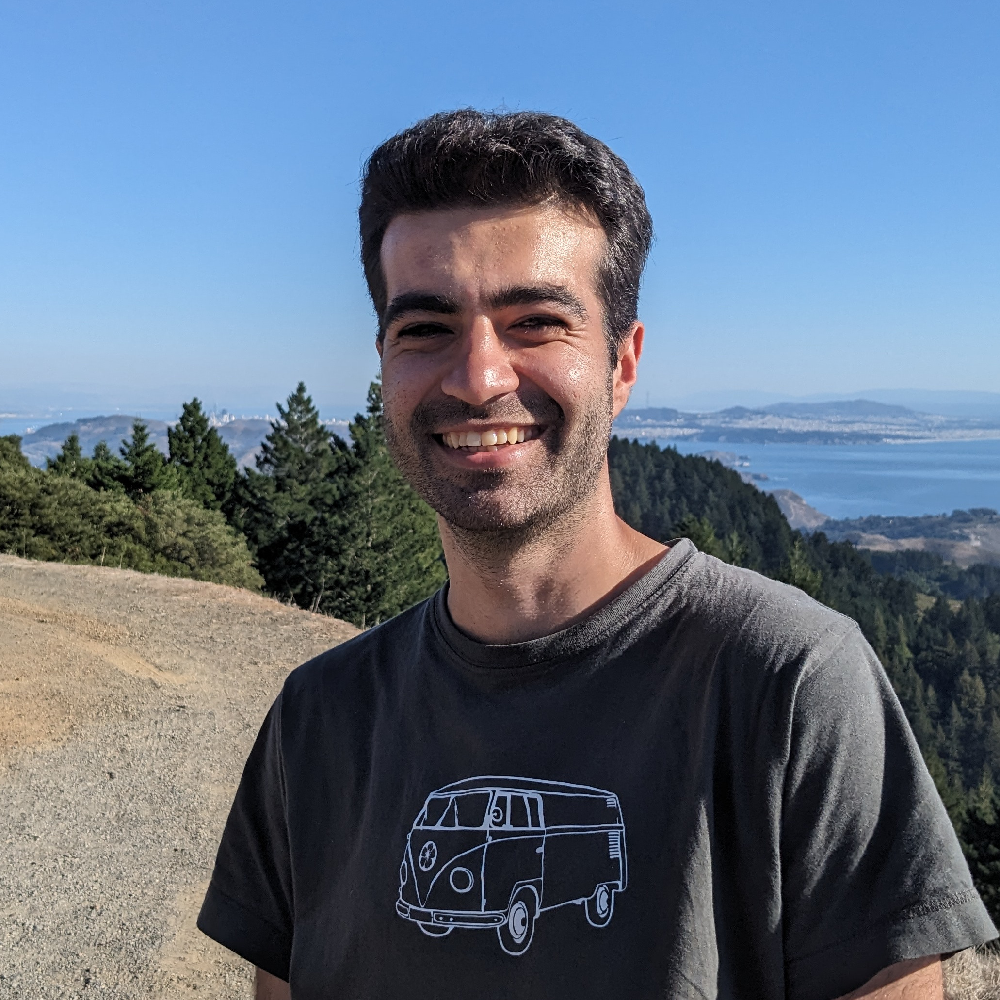
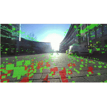
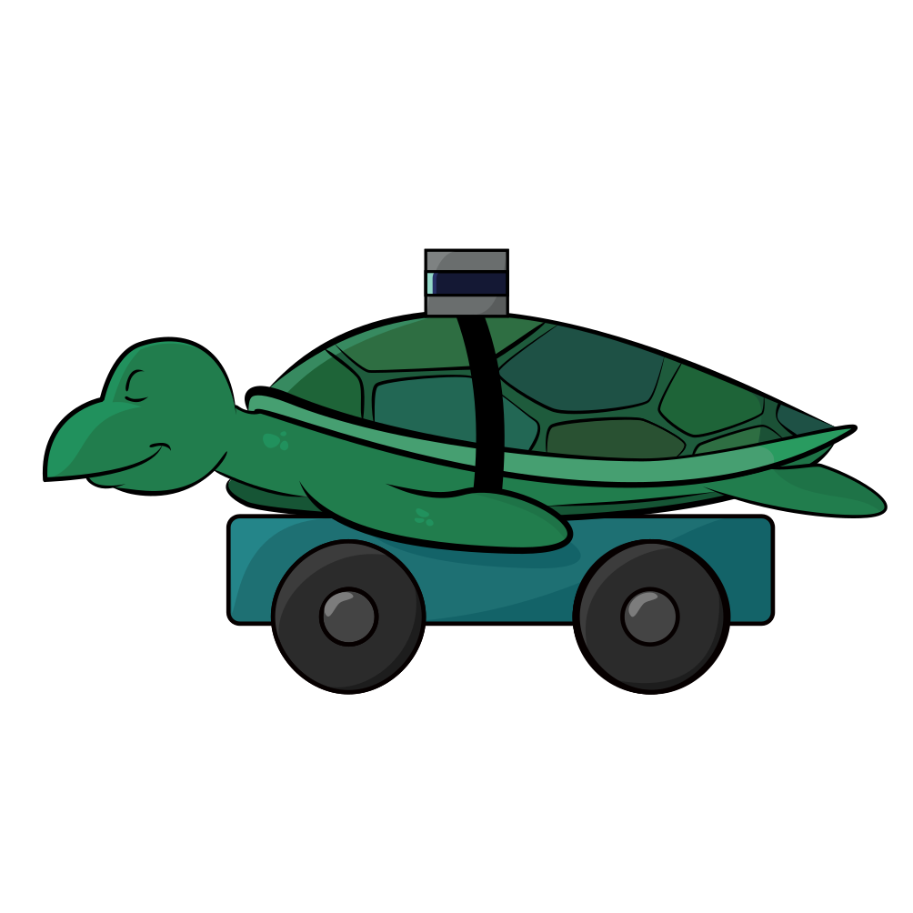
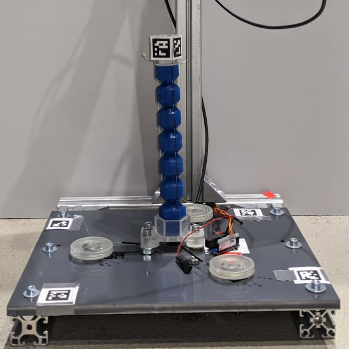
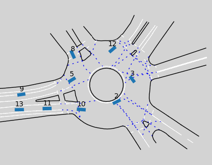
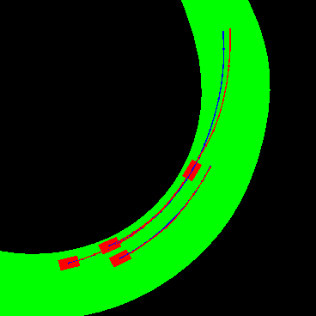

|
Sean Maroofi I'm a research associate at Hamburg University of Technology , affiliated with the Institue of Logistics Engineering . I earned a Master's degree in Mechatronics and a Bachelor's degree in Mechanical Engineering. I've had the priviledge of working under the supervision of Prof. Robert Seifried at MUM and Prof. Masayoshi Tomizuka at the MSC Lab during my study abroad at UC Berkeley. I'm interested in robotics, control, robot learning, in particular reinforcement learning and imitation learning for applications in dynamic and clustered environments. |
 |
{kind=link}
ResearchPlease find a list of my published publications and those under review as well as papers in preperation below. |
|


|
MRCD: Mobile Robot Campus Dataset for Evaluating SLAM Algorithms on Wheeled Robots
Justin Ziegenbein*, Noel Blunder*, Sean Maroofi*, Marko Thiel, Thien-Minh Nguyen, Hendrik Rose, Philipp Braun, Carlos Jahn Under Review, 2025 project page / preprint A novel dataset contribution to the development of navigation, localization, and mapping algorithms for wheeled robots in outdoor urban environments. |
|

|
Dynamic Model Inversion of Soft Robots
Sean Maroofi, Malte Grube Robert Seifried In Preparation, 2025 research thesis Tackling infinite degree of freedom by combining constant curvature assumption and servo-constraints approach to derive full-body dynamics for accurate tracking of spatial trajectories. |


|
Integrating Delivery Robots into Public Transport
Marko Thiel, Noel Blunder, Sean Maroofi, Justin Ziegenbein, Hendrik Rose, Workshop on Autonomous Delivery and Service Robots, 05/2025 Workshop page Industry-Academica dialogue on persistent challenges and restrictions in urban robot applications across Germany. |
ProjectsThroughout my academic journey, I participated in a number of robot projects. Please find a list of my ongoing and completed projects below. |
|
|
Flowcean
Sean Maroofi, Markus Knitt, Maximillian Schmidt, Swantje Plambeck, Christian Wieck, 12/2024 - Ongoing, Institute of Logistics Engineering, Hamburg University of Technology github / flowcean-ros A framework that bridges various popular machine learning libraries for developing models for cyber-physical systems in a streamlined fassion. |

|
TaBuLa-LOGplus
Sean Maroofi, Noel Blunder, Justin Ziegenbein, Manuel Schrick, Marko Thiel 06/2024 - 12/2024, Institute of Logistics Engineering, Hamburg University of Technology project page / Youtube documentary Controlling mobile delivery robots and their transport in public service vehicles combining state-machine-design flow and remote control center communication. |
|

|
Design and Implementation of a framework for Reinforcement Learning
Sean Maroofi, Chenran Li, Masayoshi Tomizuka, 08/2021 - 02/2023, Mechanical Systems Control Lab, University of California, Berkeley project page / research thesis Ego-vehicle 13 learned an acceleration and steering-angle policy using soft-actor-critic to navigate a roundabout. |
|

|
An Interaction Aware Trajectory Prediction Transformer For Racing
Finn Lukas Busch, Sean Maroofi, Niklas Trekel, Spring 2022, CS282, University of California, Berkeley github page / technical report Using visual transformers to predict trajectories of multiple vehicles in autonomous racing. |
Miscellanea |
Academic Teaching |
Master Thesis Supervisor, Hamburg University of Technology
Design and Implementation of Software Systems, Hamburg University of Technology Engineering Design Project, Hamburg University of Technology |
|
Template from Jon Barron. |